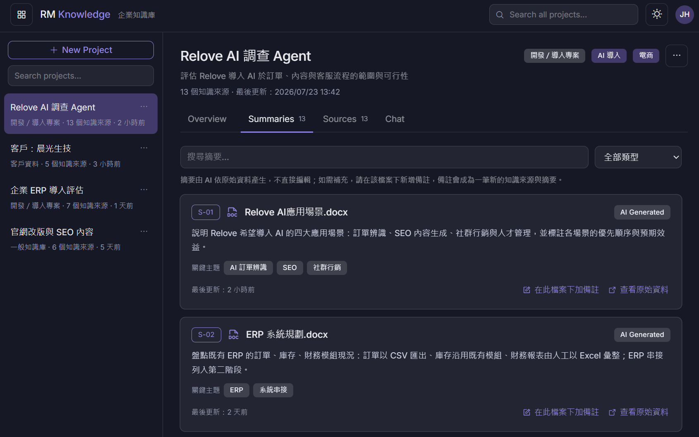

01AI Knowledge Base
業務部門 AI 知識庫
內部專案 / 規劃與開發

業務部門面對大量分散的文件、報告與資料，查找耗時、也難以重複利用。我打造一套以 AI Agent 為核心的知識庫，讓團隊能以自然語言查詢，快速取得摘要、來源與相關內容，把分散的知識整合成可即時檢索、可引用的資產。
系統會針對上傳的文件自動生成摘要與分類，並保留來源可追溯，讓業務在面對客戶問題時能即時找到依據，而不必再翻遍雲端硬碟與歷史檔案。
PythonLLMAI AgentClaude Agent SDK